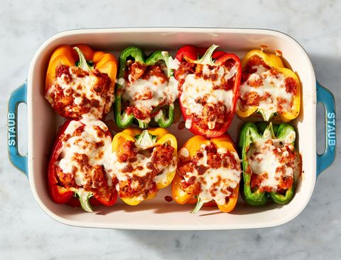

Ingredients List
- 3 c. shredded mozzarella, divided
- 1/2 c. freshly grated Parmesan, plus more for serving
- 3 cloves garlic, minced
- 1 1/2 c. marinara
- 1 tbsp. freshly chopped parsley, plus more for garnish
- Pinch pf crushed red pepper flakes
- Kosher salt
- Freshly ground black pepper
- 12 oz. fresh or frozen breaded chicken, cooked according to package instructions
and diced
- 4 bell peppers, halved and seeds removed
- 1/2 c. Swanson Chicken Broth
Directions
- Preheat oven to 400º. In a large bowl, combine 2 cups mozzarella, Parmesan,
garlic, marinara, parsley, and red pepper flakes and season with salt and pepper.
Stir until combined, then gently fold in chicken.
- Spoon mixture into halved bell peppers and sprinkle with remaining 1 cup mozzarella.
- Pour chicken broth into baking dish (to help the peppers steam) and cover with foil
- Bake until peppers are tender, 55 minutes to 1 hour. Uncover and broil 2 minutes.
- Garnish with parsley and more Parmesan before serving.
That is how you make Chicken Parm stuffed peppers. Hope you enjoy!
